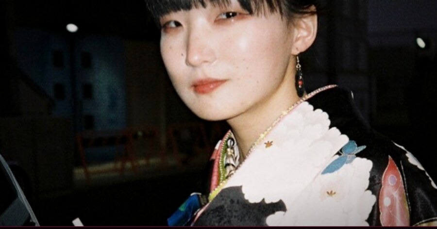

CAST 01 ▮
SIDE A

Miwa Don
ミワ・ドン ・ VOCAL
- ROLE
- Lead Vocals
- ORIGIN
- Hiroshima
- STYLE
- City Pop ・ Nocturne Jazz
- BAND
- Lunchtime Dead
「声の中に消えない夜がある」 There is a night inside the voice that never fades.